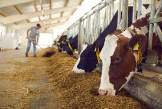

A student grew up helping to care for chickens and goats at home. What seemed like ordinary farm work later became an interest in animal production, veterinary care, and livestock business. Animal Husbandry teaches students how animals are bred, managed, fed, protected, and used to support food production and economic growth.
Animal Husbandry is the science and practice of breeding, feeding, caring for, and managing farm animals for food, production, research, and commercial purposes. It focuses on improving animal health, productivity, and welfare.
Many students think Animal Husbandry is only about taking care of animals. In reality, it combines biology, business, management, nutrition, health science, and entrepreneurship. The livestock industry creates opportunities in food production, exports, veterinary services, and agribusiness.
This is only a small introduction. If you want to understand how programmes connect to university courses, careers, opportunities, and future success, get a copy of:
The guide designed to help students make informed decisions about their future and discover opportunities they may never have considered.